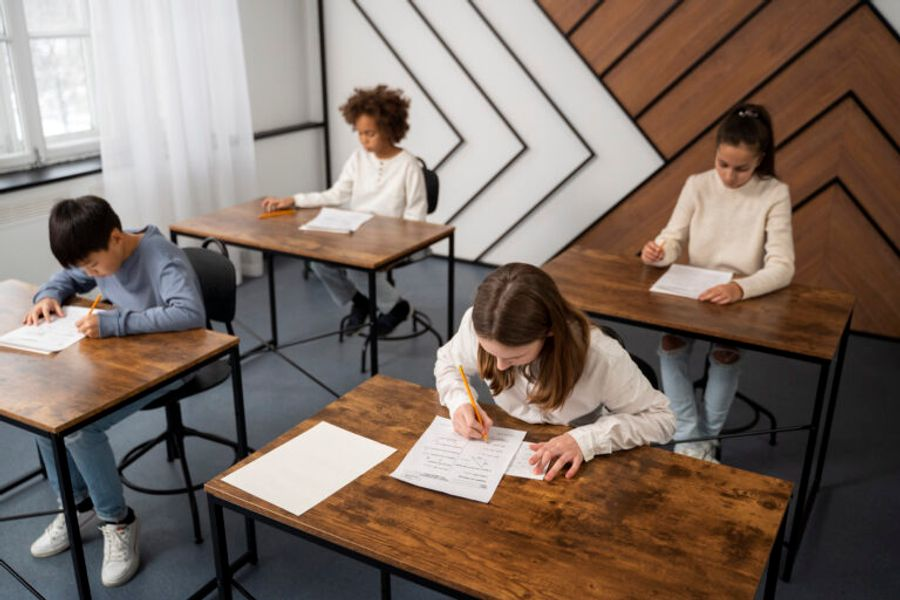

Tko mora pisati prijemni?
U 2025. godini prijemni ispit iz matematike provest će sljedeće gimnazije:
- ✓1. gimnazija
- ✓3. gimnazija
- ✓5. gimnazija
- ✓9. gimnazija
- ✓10. gimnazija
- ✓15. gimnazija
- ✓Gimnazija Tituša Brezovačkog
- ✓Gimnazija Lucijana Vranjanina
Prijemni ispit donosi do 10 dodatnih bodova, što znači da i učenici koji nemaju maksimalan broj bodova iz ocjena imaju priliku nadoknaditi razliku uspješnim rješavanjem zadataka iz matematike.
Kako ti možemo pomoći?
Naš program priprema pomaže ti ponoviti i sistematizirati gradivo osnovne škole, uz naglasak na najčešće ispitivane cjeline:
- ✓tipovi zadataka koji su se pojavljivali na prijemnim ispitima
- ✓strategije rješavanja i ključni matematički koncepti
- ✓sve potrebne formule i trikovi za brže rješavanje zadataka
Detalji priprema
Tko vodi pripreme?
Pripreme vodi prof. Maja Horvat, mag. educ. math., iskusna nastavnica matematike s dugogodišnjim iskustvom vođenja individualnih i grupnih priprema. Kao mentorica učenicima na svim razinama matematičkih natjecanja, zna kako prenijeti znanje na jasan i učinkovit način.
Rezultati govore sami za sebe!
Prošle je godine čak 90% polaznika naših priprema upisalo željenu gimnaziju. Pridruži nam se i osiguraj svoju prednost na prijemnom ispitu!
Kontaktiraj nas